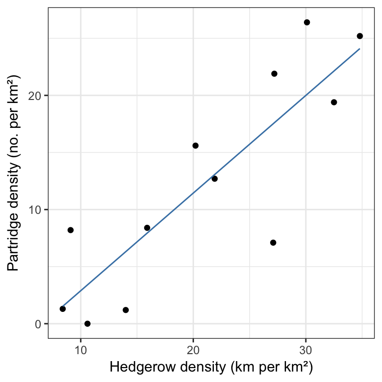

A Exercises
A.1 Week 2
You should work through the exercises step-by-step, following the instructions carefully. At various points we will interrupt the flow of instructions with a question. Make a note of your answer so that you can complete the associated MOLE quiz, which is called ‘Statistical Principles (I)’.
A.1.1 What kind of variable is it?
The following table gives a number of measurements taken in the course of a study of a woodland ecosystem. What type of variable results from the measurements taken in each case?
| Measurement | Units |
|---|---|
| Height of tree | Metres |
| Particulate deposits (pollution) on leaves | Scale of 1 to 5 (very light to very dark) |
| Age of tree | Number of annual rings (one ring formed each year) |
| Month of bud break | Month no. 1 (Jan) - 12 (Dec) |
| Leaf shape | 1 - oval, 2 - lanceolate, 3 - palmate, 4 - pinnate |
| Number of species of aphid on a tree | Number of spp. |
| Average number of aphids per leaf | Individuals on 20 leaves |
| Time of highest light intensity under leaves | Time of day |
| Occurrence of fungal infection on the leaves | Heavy (>50% of leaves), Light (<50% of leaves), Absent (no infection) |
| Tree species | Latin name |
| Aspect of ground on which each lime tree occurs | Degrees (0-360) |
| Bracken in random quadrats | Visual estimate of % coverage |
There are no answers to this question on MOLE. If you’re not 100% sure what the right answer is in any of these examples, ask a TA or instructor for help.
A.1.2 Definitions
The figure below is an attempt to represent some of the concepts you’ve been studying this week (e.g. the sampling distribution, the standard error, etc):
Figure A.1: What do the letters refer to?
MOLE Question
Assign the appropriate term (sampling distribution, standard error, etc) to the letters A-D in the figure.
A.1.3 What form do sampling distributions take?
A data file containing a variable sampled from three different populations (labelled A, B, and C) is available in SKEWED_POPULATIONS.CSV. Download the SKEWED_POPULATIONS.CSV file from MOLE and place it in your working directory. Read SKEWED_POPULATIONS.CSV into an R data frame called all_pops. Examine the data set—both visually and in terms of its descriptive statistics:
Inspection. Use the View function and dplyr function glimpse (or str) to inspect the ‘data’. Which variables are in the data frame? What kind of variables are they (numeric, categorical, etc)?
Descriptive statistics. Use the appropriate dplyr functions (group_by and summarise) to calculate the mean and standard deviation of the Values variable in each population. HINT: You will need the mean and sdfunctions to help you do this.
Graphs. Use ggplot2 to construct three histograms to summarise the distribution of the variables. HINT: You will need to use geom_histogram and the facet_wrap functions to do this. Make sure that you use the original data (all_pops)—not the summarised data.
MOLE Question
How does the distribution of the variable differ across populations in terms of its central tendency, dispersion and skewness?
In which population is the variable Values the most skewed?
Now that you understand a bit about the distribution of the variable in each population we can move to the next step. You’re going to explore how the shape of a variable’s distribution influences the sampling distribution of its mean. If you’re not sure what that last sentence means, skim over the Sampling error chapter or ask a TA for help before proceeding.
One way to tackle this problem is to work with each population in turn, using the bootstrapping trick to construct the sampling distribution of the mean. This involves three steps. First we have to extract the subset of values we require and store these in a numeric vector (step 1). Then we use a bit of R trickery to calculate 1000 bootstrapped means (step 2), and finally, parcel up the result into a data frame (step 3). Here’s how this works for variable A:
# 1. extract the values of the variable
x <- filter(all_pops, Population == "A")$Values
# 2. carry out the bootstrapping (you don't need to understand this)
boot_means <- replicate(1000, mean(sample(x, size = 25, replace = TRUE)))
# 3. wrap up the result as a data frame
plot_df <- data.frame(boot_means)Note that this code creates bootstrapped samples of 25 observations to construct the sampling distributions in the exercise above (size = 25).
Once we have the bootstrapped sampling distribution of the mean we need to visualise this as a histogram. You should be able to work out how to do this using ggplot2. Construct this histogram for each of the variables. Just look at each histogram in turn. There’s no need to try to make one plot containing all three histograms. Look at each one carefully, paying close attention to the form of the original sample and the bootstrapped sampling distribution of their mean.
MOLE Question
Are the sampling distributions of the means more, or less, skewed than the distribution of the corresponding variables?
Which variable (A, B, or C) has the most skewed sampling distribution associated with its mean?
You used bootstrapped samples of 25 observations to construct the sampling distributions in the exercise above (size = 25). You can change this number by altering the size argument of the sample function. Use this fact to explore how the shape of the sampling distribution changes as you increase sample size of the ‘C’ variable. Start by using only 10 individuals in each bootstrapped sample, and gradually increase this to 100.
MOLE Question
What happens to the shape of the sampling distribution of the mean of the ‘C’ variable as you change the bootstrapped sample size?
A.1.4 How does sample size influence the standard error?
Think back to the plant colour morph example. We used a simulation in R to calculate the approximate sampling distribution of purple morph frequency estimates. We used this to examine how the amount of sampling variation changes with sample size. We noted that, in general, it seems to decline with sample size. The bigger our sample, the more precise our estimate. That might seem obvious, but what form does this relationship take?
We’ve written an R function to allow you to explore how the size of samples influence the standard error of purple morph frequency estimates. You can read this into R by running the following line of R code (just copy and paste it into the Console):
sample_plants <- function(samp_sizes, prob) {
sapply(samp_sizes, function (size) {
raw_samples <- rbinom(n = 10000, size = size, prob = prob)
sd(100 * raw_samples / size)
})
}(You are not expected to understand how this works!)
This will create a function called sample_plants that’s ready for you to use. Here’s how it works:
sample_plants(samp_sizes = c(10, 20, 40, 100), prob = 0.4)## [1] 15.608569 10.946439 7.746370 4.902385The first argument, samp_sizes = c(10, 20, 40, 100), provides the set of sample sizes we want the standard errors for, the second argument, prob = 0.4, is the frequency of purple plants (expressed as a probability) in the population. The function returns a vector of numbers that are the standard errors at each sample size.
The easiest way to explore the relationship between sample size and standard error is to simply plot it. Since we use ggplot2, we need to collect together the inputs and outputs of these simulations into a data frame. Here’s one way to do this:
sim_data <-
data.frame(sample_size = c(10, 20, 40, 100)) %>%
mutate(se = sample_plants(sample_size, prob = 0.4))
sim_data## sample_size se
## 1 10 15.669804
## 2 20 10.908217
## 3 40 7.772273
## 4 100 4.912963Use the above code to vary the sample size from around 20 to 500 (the exact numbers don’t matter too much), assuming that the purple morph frequency is 0.4 (prob = 0.4). You only need to vary the values assigned to sample.size to do this. Make a plot to investigate how the standard error changes as the sample size increases.
MOLE Question
Does the standard error halve when you double the sample size, or is the relationship more complicated? If you think the relationship is more complicated, what form does it take?
Now repeat the exercise with assuming that the purple morph frequency is 0.1 (prob = 0.1).
MOLE Question
Does the standard error depend on purple morph frequency? Does it get smaller or larger when we move from a frequency of 0.4 to 0.1?
A.2 Week 3
You should work through the exercises step-by-step, following the instructions carefully. At various points we will interrupt the flow of instructions with a question. Make a note of your answer so that you can complete the associated MOLE quiz, which is called ‘Statistical Principles (II)’.
A.2.1 Sample size and statistical power
The TWO_POPS_1.CSV file contains values of a numeric variable in two different populations (labelled A and B). The file contains a large sample from each of the two populations. For the purpose of this exercise you’ll treat each these as though they are the ‘whole population’ (even though they are really just limited samples). Download the TWO_POPS_1.CSV file from MOLE and place it in your working directory, then read this into an R data frame called pop_info_1.
Examine the populations—both in terms of their descriptive statistics, and visually:
Inspection. Use the View function and dplyr function glimpse (or str) to inspect the ‘data’. Which variables are in the data frame? What kind of variables are they (numeric, categorical, etc)?
Descriptive statistics. Use the appropriate dplyr functions (group_by and summarise) to calculate the mean, standard deviation and sample size of Values in each population.
Graphs. Use ggplot2 to construct a pair of histograms to summarise the distribution of the variable in each population. This is most easily done using facet_wrap.
MOLE Question
Note down the key features of the distribution of the variable in each population. Does the variable seem to be normally distributed? How do the distributions differ in terms of their central tendency and dispersion among the two populations?
Now that you understand the two populations a little bit we can start to experiment with them. We want you to explore what happens when you draw different sized samples from these two populations. Specifically, you’re going to explore how the sample size influences your ability to detect a difference in the population means, using a permutation test. To start with, you’ll use dplyr to simulate the process of drawing an equal sized sample from each population:
# take a sample from each population
use_data <- pop_info_1 %>%
group_by(Population) %>%
sample_n(10) %>%
ungroupCopy this first chunk of dplyr code into your script and run it. After doing this, use_data will contain a sample of 10 observations from each population (use View to verify this). You haven’t seen it before, but the sample_n function just takes a sample from a data frame, i.e. sample_n(10) takes a sample of 10 observations. Using it with group_by just takes a sample from each population. The ungroup bit at the end removes the grouping information from the output. The next bit won’t work properly if you forget this.
Now that you have a sample to work with, you need to use a statistical test to assess the evidence for whether or not the population means are different. You should already know the answer to this question from your initial explorations (go back to these again if you’re not sure). You’ll use a permutation test to do this. You should skim back over the Comparing populations chapter if you’re not sure how this works, or ask a TA to remind you.
Here is some not-at-all-simple R code that performs the permutation test:
# permutation test (difficult R code!)
plt_info <- replicate(1000, simplify = TRUE, {
use_data %>%
mutate(Values = sample(Values)) %>%
group_by(Population) %>%
summarise(X = mean(Values)) %>%
`$`(X) %>% diff
}) %>% data.frame(diff_means = .)There are quite a few tricks used in that R code. And yes, you are not expected to understand how it all works. Ask a TA for an explanation if you’re curious though. You just need to use it, so copy this next chunk of code into your script.
Finally, here is some R code that plots the resulting null distribution of the difference between means, along with the difference actually observed in the sample (red line):
# compute the difference between (more tricky code)
mean_diff <- use_data %>%
group_by(Population) %>%
summarise(X = mean(Values)) %>% `$`(X) %>% diff
# plot everything (this bit should make sense to you)
ggplot(plt_info, aes(x = diff_means)) +
geom_histogram(bins = 18) +
geom_vline(xintercept = mean_diff, colour = "red")Figure A.2: Example null distribution from the permutation test
Yours won’t be the same, as you will have used a different sample.
Here’s what we want you to do with this… Using a sample size of 10 (i.e. leave sample_n(10) as it is), run all three chunks several times, checking the final plot each time before you run them again. About 10-20 runs should be enough to answer the first question…
MOLE Question
Is a sample size of 10 sufficient to detect a difference between the population means? Make sure you can explain your answer.
Now repeat this exercise, using successively larger sample sizes, e.g. 10, 20, 40, 80, and 160. To use a sample size of 20 you would change sample_n(10) to sample_n(20). That’s all—there’s no need to make a new copy of all the code (it will end up as a big mess if you do this). Just change the sample_n part and run the new version of everything several times. You might need to experiment a bit with the sample sizes, but don;t make them much bigger than about 200.
MOLE Question
Which sample size seems to be sufficient to detect a difference between the population means?
A.2.2 A bit more about statistical power
That last exercise was all about statistical power. The statistical power of a test relates to its ability to detect an effect when it is present. You just explored how sample size affects the power of a test. In this next exercise you are going to investigate how other features of samples affect the statistical power of a test. You’ll do this by repeating the last exercise using two new pairs of populations.
The information about the two new population pairs are contained in the TWO_POPS_2.CSV and TWO_POPS_3.CSV files (these have the same structure as TWO_POPS_1.CSV). Download the two files from MOLE and place them in your working directory, then read them into an R data frames called pop_info_2 and pop_info_3, respectively. Make sure you place the R code that does this near the top of your script so that it occurs before all the code that performs the permutation test.
Repeat the Descriptive statistics and Graphs steps from the previous exercise to make sure you understand these new population pairs. Again, make sure you place the R code that does this before all the code that performs the permutation test (but after the reading-in-data step).
MOLE Question
Note down the key features of the distributions of each pair of populations. Note their central tendency and dispersion. How do the new pairs differ from the population pair used in the previous exercise?
Now, for each population pair in turn, repeat the previous exercise where you varied the sample size. The only part of the permutation test and plotting code you need to alter is the first chunk. For example, to use sample sizes of 40 from the second population pair (in pop_info_2) you would use:
# take a sample from each population
use_data <- pop_info_2 %>%
group_by(Population) %>%
sample_n(40) %>%
ungroupThe aim of this exercise is to see how big the samples have to get before you think you can reliably detect a difference in the means using the permutation test. The ultimate goal is to understand how the distributions of the population pairs influence your ability to detect the difference in their means.
Question to consider
Think about the differences between three population pairs. Which aspect (or aspects) of their distributions do you think best explains the change in the statistical power of the permutation test you’ve been using?
Ask an instructor or TA for the answer if you’re not sure
A.3 Week 4
You should work through the exercises step-by-step, following the instructions carefully. At various points we will interrupt the flow of instructions with a question. Make a note of your answer so that you can complete the associated MOLE quiz, which is called ‘Simple Test (t-tests)’.
A.3.1 Eagle owls and Norway rats
A data set containing information about the sizes of Norway rat skulls in the pellets of Scandinavian eagle-owls is available in the RATSKULL.CSV file (you may have come across this before). The data comprise a column of rat skull sizes (measured in grams) and a column of codes indicating the season when a particular skull sample was taken. These data were collected in order to evaluate whether there is a difference between sizes of rats eaten in summer and winter. That is, we want to know if there is a statistically significant difference between the mean rat skull sizes in the winter and summer samples.
Download the RATSKULL.CSV file from MOLE and place it in your working directory (this is the location you set at the beginning of this practical). Read the data in RATSKULL.CSV into an R data frame, remembering to assign the data frame a name.
As always, we should always start by looking at the data — both visually and in terms of its descriptive statistics:
Inspection. Use the View function and dplyr function glimpse to visually inspect the raw data. What are the names given to rat skull size variable and the season indicator variable? What values does the season indicator variable take?
Descriptive statistics. Use the appropriate dplyr functions (group_by and summarise) to calculate the sample size, sample mean and standard deviation of each sample. HINT: you will need to use the mean, sd and length functions to help you do this.
Graphs. Use ggplot2 to construct a pair of dot plots, one above the other, to summarise the winter and summer skull size distributions. HINT: you will need to use geom_dotplot and the facet_wrap functions to do this; look over the plant morph example from the beginning of this practical to see how to use these.
Using the dot plots, and the descriptive statistics, conduct an informal evaluation of the assumptions of the t-test. You should re-read the relevant section above if you can’t remember what these are.
MOLE question
Do you feel the data conform acceptably to the assumptions? If not, explain why.
Let’s carry on, assuming that we are confident that it is OK to use a two sample t-test to compare the sample means. Use the R t.test function to carry out this evaluation now.
MOLE question
Write a concise but complete conclusion summarising the results of the test.
Is this what you expected from looking at the distributions of data in the two samples?
Suggest two possible biological reasons for the result you observe.
A.3.2 The power of pairing
The paired-sample t-test is a very useful technique, for the simple reason that it can improve the power of simple experiments. You can get an idea of the value of a paired-sample t-test by seeing what happens when you ignore the pairing structure of a paired-design data set. We want you to do this with the glycolip data introduced in the Paired-sample t-tests chapter.
The pairing was with respect to patients in this example. Let’s see what happens if you ignore the pairing. If you don’t already have it in your working directory, download the GLYCOLIPID.CSV file, and then reanalyse the data using an ordinary unpaired two-sample t-test (N.B.—This analysis is wrong!).
MOLE question
What result do you get and how does this compare with the paired-sample test?
A.3.3 Fungal infection in French beans
A plant pathologist noticed that fungal infection in roots of French beans (Phaseolus vulgaris) was rather variable among crops and hypothesized that infection might be affected by the soil type: in particular whether the beans were grown on clayey or sandy soils. Root samples were taken from beans growing in each soil type and fungal infection was measured indirectly by measuring the amount of glucosamine in the roots. Glucosamine is a fungal sugar which is polymerised into chitin which forms the cell walls of most fungi.
The glucosamine concentrations (\(\mu\)g g\(^{-1}\) root dry weight) recorded from the samples were:
| Sandy soil | 2.3 | 2.4 | 2.5 | 2.6 | 2.8 | 2.7 | 3.1 | 2.3 | 2.5 |
| Clay soil | 2.3 | 2.5 | 2.8 | 3.2 | 2.9 | 3.1 | 3.2 |
Download the FRENCH_BEANS.CSV file from MOLE and place it in your working directory. Read the data into an R data frame (remember to give this a name!), inspect the data, generate some summary statistics (means and SDs) and then plot the data, just as you did in the last exercise. This should be quick to achieve–just copy and paste the code you produced, and edit this where required.
Use an appropriate t-test to determine whether there is a significant difference between the amount of infection of bean roots in the two different soils.
MOLE question
Make a note of the results:
Mean for plants on clay soil = ?
Mean for plants on sandy soil = ?
t = ?
d.f. = ?
p = ?
MOLE question
Write a statement of the result of the test suitable for inclusion in the results section of the plant pathologist’s report.
A.3.4 Sheep, grass and nature reserves
The management committee of a nature reserve wants to manage some large grassland areas of the reserve using low density sheep grazing to prevent the grass becoming too long and making the habitat unsuitable for some of the low-growing herbaceous plants for which the reserve is important. Before implementing the plan they conduct a pilot experiment using some fenced plots on the reserve, to test whether low density sheep grazing affects various species of plants.
One problem is that the area is very variable—some parts are wetter than others, and the plants of interest are not particularly evenly distributed. There is also a limit to the number of plots (and sheep) they can use in the experiment. In order to make the maximum use of the resources and, take some account of the variability in the habitat the experiment is set up by randomly placing eight fenced plots around the reserve, with each plot being divided in half by a fence down the middle. Sheep are introduced to one half of each plot (the half being randomly selected in each case), and allowed to graze for the appropriate period of the year. The other half is left ungrazed.
MOLE question
Why is this a better design than just having separate grazed and ungrazed plots positioned at random?
Over the next 2 years, the abundances of various plants in the in the plots are surveyed.
The data below give the numbers of gentians from each of the eight half-plots with sheep, and the corresponding ungrazed halves after one year of the experiment.
| Treatment | Plot 1 | Plot 2 | Plot 3 | Plot 4 | Plot 5 | Plot 6 | Plot 7 | Plot 8 |
| Grazed | 27 | 1 | 16 | 8 | 10 | 19 | 30 | 9 |
| Ungrazed | 14 | 6 | 17 | 5 | 0 | 11 | 21 | 6 |
These data are stored in GENTIANS_GRAZING.CSV. Test whether there is any evidence for an effect of sheep grazing on the numbers of gentians.
MOLE question
What is your conclusion?
MOLE question
What other comparison would it be useful to be able to make in order to reach a satisfactory conclusion about the effects of grazing? What test would you do for this?
A.4 Week 5
A.4.1 Oviposition behaviour in bean weevils
The bean weevil, Callosobruchus maculatus, lays its eggs on the surface of legume seeds such as black-eyed beans and aduki beans. In an experiment to test whether female Callosobruchus are selective in the type of beans on which they oviposit, choice tests were carried out. In each, a single newly mated female was introduced into an experimental arena containing one each of 5 bean types. The bean on which the first egg was laid was recorded. The test was repeated 45 times with a different beetle each time.
| Bean type | Aduki | Black-eyed | Kidney | Haricot | Pinto |
|---|---|---|---|---|---|
| Number of times chosen | 6 | 16 | 10 | 8 | 5 |
Construct a data frame containing these data. It needs to have two columns: Bean should contain the bean type, and Frequency should contain the number of times the bean was chosen. Make the following bar plot to summarise them:
Carry out an appropriate test to determine whether Callosobruchus are selective in the type of beans on which they oviposit.
MOLE question
Summarise the results from the test.
A.4.2 Determining expected values
What might be an appropriate way to obtain a set of expected frequencies for an ornithologist who wants to analyse data on observations of great tits foraging to see if they prefer to forage in particular tree species? Imagine that along a transect through a wood a record was made every time a great tit was seen and of the tree species in which it was foraging…
MOLE question
What, if any, additional data would this require the ornithologist to collect?
A.4.3 Sex and eye colour
Let’s return to the initial example used to illustrate a contingency table, we might want to ask if there is an association between eye colour and sex. Data in the file CLASS.CSV show a number of attributes measured from a sample of APS students from a few years ago. Each row contains observations from one student. The two variables we are interested in here are Sex (values: ‘Female’ and ‘Male’) and Eye (values: ‘Blue’, ‘Brown’ and ‘Green’).
Carry out a \(\chi^{2}\) test to determine whether eye colour and sex are associated in this sample.
MOLE question
What do you conclude about the association between sex and eye colour?
A.4.4 Eagle owls and prey choice
There are many situations which may produce tables larger than a 2 x 2 contingency table. For example, we could have used the same experimental procedure as in the Callosobruchus experiment given earlier but looked at bean choice for 5 sets of females each of which had themselves been reared on a different bean type to see if selection of oviposition site is influenced by the bean type the female developed on.
In fact we are going to look at prey choice between male and female eagle owls. You will recall that the prey of eagle owls can be established by examination of the pellets containing the undigested remains of their prey. In the eagle owl study the diets of the male and female of a pair were studied by examination of the pellets collected from beneath their roosts (fortunately, an individual tends to use the same roosting site, and individuals tend not to roost together). The numbers of all prey types found in the pellets were recorded.
These data are in the file EAGLES.CSV. Read these data into R and inspect them to ensure you understand how they are organised. Once you understand the data, see if you can make the following bar plot to summarise them:
Analyse whether there is any evidence of differences in the diets of the male and female eagle owls.
MOLE question
What do you conclude?
MOLE question
If there is an effect, what might account for the result?
A.5 Week 6
A.5.1 Hedgerows and partridges
Hedgerows are the main nesting habitat of the grey partridge (Perdix perdix). A survey was carried out to establish whether the abundance of hedgerows in agricultural land had an effect on the abundance of grey partridge. From an area of agricultural land covering several farms, twelve plots were selected which had land uses as similar as possible but differed, as evident from preliminary inspection, in the density of hedgerows (km hedgerow per km2). Plots were deliberately selected to cover a wide range of hedgerow densities. The total hedgerow lengths, and exact plot areas, were measured by use of large scale maps. The density of partridges was established by visiting all fields in a study plot once immediately after dawn and once just before dusk, when partridges are feeding and therefore most likely to be seen. Counts of birds observed were made on each visit and the dawn and dusk data were averaged to give a value for partridge abundance for each study plot.
The data are stored in a CSV file PARTRIDG.CSV. Take note: this is a different data set than the one used in the Regression diagnostics chapter. The density of hedgerows (km per km2) is in the Hedgerow variable and the density of partridges (no. per km2) is in the Partridge variable. Read in the data and take a look at it using the View function.
MOLE question
Which way round should the variables be?
-
Independent (x):
-
Dependent (y):
Make a scatter plot, fit a regression model for the relationship between hedgerow density and partridge density, plot the regression diagnostics, and carry out a statistical significance test to evaluate the relationship (use an F-test for the test).
MOLE question
-
If there is a relationship does it look linear?
-
Ratio or interval data?
-
Independent variable y likely to be normally distributed for each x?
-
Variance increases or decreases markedly with increasing x?
MOLE question
Summarise the results of your analysis in words.
Finish up by preparing a figure that summarises the data and the best fit line estimated from the regression:

A.5.2 Analysing associations
Consider the following scenarios amenable to analysis by either simple linear regression, Pearson’s product-moment correlation (“parametric correlation”), or Spearman’s rank correlation (“non-parametric correlation”):
Shoe size and height of students in a class. We want to know if shoe size is associated with the height of male students in a class. We measure the shoe size and height from 120 students.
Heart rate and age in the crustacean Daphnia reared in the lab. We want to know how heart rate changes with age. Six groups of 10 Daphnia are reared to ages 2, 4, 6, 8, 10, 12 days old. The heart rate of each individual is then assayed at their target age.
Number of plant species and number of herbivorous insect species. We want to know if the diversity of herbivorous insect species is associated with plant diversity. 22 randomly located 5x5m study plots were surveyed in a field.
Order of arrival of dung beetle species on elephant dung and body size. We want to know if larger dung beetle species are better at locating dung. We locate a fresh piece of dung and observe beetles arriving over a period of 3 hours, recording the weight of each new arrival.
Percentage bud damage to pear trees by bullfinches. We want to know how bud damage changes with respect to the distance of trees from thick vegetation at the edge of the orchard (in which the bullfinches gather). Trees are arranged in rows parallel to the orchard edge and a single tree, selected at random from every row, is sampled for bud damage.
Density of nesting stork pairs and number of human births. A science reporter from the Daily Mail is struggling to come up with a story. They think storks might deliver babies, so they collect local hospital records and amateur ornithology records covering a 20 year period in the Sheffield area.
Colour of the waterbug Sigara falleni from a series of ponds and colour of the sediment from each pond. We want to know if the colour of the waterbug Sigara falleni (ranked from dark to light) is related to the colour of the sediment (ranked on same scale) from each pond.
Number of copulations achieved by male elephant seals and dominance. We want to know if higher-ranked males achieve more matings. Rank is established by observing the outcome of aggressive interactions between males and the number of matings is observed over a two week period in the breeding season.
MOLE question
Suggest the type of analysis—and the dependent and independent variables where relevant—likely to be appropriate in each case. You may assume that if there is a relationship it will be roughly linear over the range considered.
A.5.3 Diagnosing problems
We have constructed four artificial data sets to practice interpreting regression diagnostic plots. Each case study corresponds to a hypothetical study where we wish to understand the dependence of numeric variable \(y\) on numeric variable \(x\). This is a simple linear regression setting where \(y\) is the dependent variable and \(x\) is the independent variable.
All four data sets are stored in one file called SIMPLEREG_EGS.CSV—the dependent variable is stored in y, and the independent variable is stored in x. Each case study is identified by the Case variable (values: ‘A’, ‘B’, ‘C’ and ‘D’). You should analyse each case separately. To do this, you will need to extract a required subset of data using the filter function.
Fit a linear regression model to each case in turn, and then examine the residuals vs. fitted plot, the normal probability plot, and the scale-location plot.
MOLE question
For each of the four case studies, make a note of your answer to the following questions:
Is the linearity assumption satisfied?
Is the normality assumption satisfied?
Is the constant variance assumption satisfied?
A.6 Week 7
A.6.1 Lead pollution in lakes
The United States Water Quality and Purity Board have been monitoring the concentrations of lead in trout in lakes in New York State because of concern about toxic concentrations of lead in the food-chain, especially in trout and the birds feeding on them. Two of the lakes (Kelvin and Beaver) are surrounded by agricultural land. The other three lakes (Allsopp, Anglers and Rocky) are adjacent to built-up and industrial areas.
Data for lead in trout in the lakes are in a CSV file LAKEPB.CSV. The measurements are the concentration of lead (mg kg-1) from 6 randomly sampled trout in each lake. The concentration measurements are stored in the Lead variable and the lake codes are in the Lake variable.
Read this data file into R, explore the data visually, and then proceed to fit a one-way ANOVA model. Use your plot and fitted model to evaluate the assumptions of the model:
MOLE question
Do you feel the data conform acceptably to the assumptions on ANOVA?
If the data are appropriate carry out the global significance test and write a concise summary of the results from the ANOVA:
MOLE question
Summary:
MOLE question
Do you have any comments on the possible biological reasons for the patterns you see in the data?
Produce a ‘publication ready’ plot similar to the one below:
A.6.2 The effect of molluscicide on rates of movement in slugs
Garden slugs of the same species and approximately the same size were given either a full dose, or a half strength dose, or a one tenth strength dose of Slugit (a molluscicide) dissolved in water. A control group were treated with just water. The rate of movement of the slugs on a moist wooden board after treatment was recorded (cm per min). There were 8 replicate slugs for each treatment.
The data are stored in a CSV file SLUGIT.CSV. The rate of movement is stored in the Distance variable and the treatment codes are in the SlugitTreat variable (levels: ‘full dose’, ‘half dose’, ‘one tenth dose’, ‘control’). Read in the data, explore the data — using a box and whiskers plot or a multi-panel dot plot — and then fit a one-way ANOVA model.
Use the exploratory plot and fitted model to evaluate the assumptions of ANOVA:
MOLE question
Do you feel the data conform acceptably to the assumptions on ANOVA?
-
Data type?
-
Normally distributed?
-
Similar variances in each treatment?
If the data are appropriate carry out the global significance test and write a concise summary of the results from the ANOVA:
MOLE question
What are the results from the ANOVA?
MOLE question
Write a summary of the results from the analysis.
Produce a ‘publication ready’ plot similar to the one below:
A.6.3 Multiple comparisons — slug movement and molluscicide
Return to the slug molluscicide exercise and carry out the Tukey HSD test on the movement rates of slugs following different doses of Slugit.
MOLE question
Prepare a summary of differences between means.
MOLE question
Comment on any features of biological interest in the results.
A.7 Week 8
A.7.1 Limpets and salinity
Limpets live on rocky shores, often in rock pools and on exposed rock surfaces. Those limpets which live in rock pools can experience a very wide range of salinity conditions during the daily tidal cycle, especially if fresh water from inshore flows into the pools when the tide is out. A researcher was interested in whether two different limpet species (Acmaea scabra and Acmaea digitalis) differ in their internal concentration of sodium ions when exposed to low salinity conditions.
Eight limpets of each species were placed in tanks of water containing (100% sea water; 75% seawater diluted with distilled water, and 50% sea water diluted with distilled water. The data are stored in a file called ACMAEA.CSV. The layout of the data should be fairly obvious: sodium ion concentration is stored in the Sodium variable, species codes are in Species (levels: ‘scabra’ = A. scabra, ‘digitalis’ = A. digitalis), and salinity is in Salinity (levels: 50, 75 and 100).
Use glimpse to understand the data set. What kind of variable is Salinity? It is not a factor. When R reads in the data it assumes Salinity is meant to be treated as a numeric vector because it contains numeric values. We need to convert it to a factor before proceeding so that lm fits the right kind of model (i.e. an ANOVA model). Use the mutate function with the factor function to convert Salinity to a factor variable.
These data can be used to answer the following questions:
Does salinity affect the sodium concentration in the limpets?
Do the two species differ in their internal sodium concentrations?
Do the species differ in their response to changes in salinity?
Prepare an interaction plot to allow you to visually assess the likely answers to these questions:
Once you are satisfied you understand the relationships proceed with a statistical analysis to address the three questions.
MOLE question
What effects does the analysis indicate?
| Term | F | d.f. | p |
|---|---|---|---|
| Salinity effect: | ? | ? | ? |
| Species effect: | ? | ? | ? |
| Interaction: | ? | ? | ? |
Use your knowledge of the data and the fitted model object to check the assumptions of your analysis.
MOLE question
What type of data are they?
MOLE question
Do the data satisfy the assumption of normality?
MOLE question
Are the variances similar among treatment combinations?
Finally, think about how to best summarise the results in written form.
MOLE question
Summarise the results from the ANOVA in words.
If you find any the global significance tests to be significant, it may be appropriate to carry out one, or more, multiple comparison tests. You should not carry out tests for any effects that are not significant (there’s no point in testing means you already know not to be different!).
MOLE question
If there were significant effects in the ANOVA summarise the differences between the means using a table of means with appropriate letter codes, and in words.
MOLE question
What does the analysis suggest about the osmoregulation of Acmaea.
Finally, see if you can prepare the following “publication quality” plot to summarise the results:
A.7.2 Sheep, grass and nature reserves (again)
Take another look at the Sheep, grass and nature reserves question from the week 4 (the data are in GENTIANS_GRAZING.CSV). This was an example of a paired design, where the variable of interest was species diversity in pairs of grazed and ungrazed plots. The data were originally analysed using a paired-sample t-test. Repeat the analysis, but now do it in two ways: 1) use a paired-sample t-test, 2) use an appropriate ANOVA.
Warning: Check the data carefully after you read it in. Pay close attention to the type of variable that R creates for the Plot column. You may need to prepare the data for analysis first…
MOLE question
How similar are the results relating to grazing impacts from the two analyses?
MOLE question
What is the mathematical relationship between the t-statistic from the paired-sample t-test and the F-ratio (for the treatment effect) from the ANOVA?
A.8 Week 9
A.8.1 Fungal pathogen infection on leaves
(No actual data are provided for this exercise—we just want you to think about the hypothetical data)
Spores of a particular fungal pathogen infect leaves of a tree wherever the spores happen to land and the subsequent development of the fungus causes a single distinct ‘pustule’ on the leaf at each infection site (typically <20 pustules are found on each leaf). Imagine you have data from a study comparing the intensity of infection between canopy and sub-canopy leaves.
MOLE question
What sort of transformation might be appropriate for these data?
A.8.2 Pollution sensitive stoneflies - what’s going into the river?
The data for this exercise are in STONEFLY.CSV. Counts of the abundances of stonefly nymphs (which are generally intolerant of organic pollution) at three sites are stored in the Stonefly variable. The Site variable has three values (‘Above’, ‘Adjacent’ and ‘Downstream’) which index the three study site: immediately above (‘Above’), adjacent to (‘Adjacent’), and 0.5 km downstream (‘Downstream’) of a discharge point for a storm drain.
Read these data into R and examine them to evaluate whether they are suitable for using one way ANOVA to test for differences in abundance at the three sites. Hint: fit the model and construct the regression diagnostic plots.
Suggest a transformation that may help. Carry out the transformation to see whether it has the desired effect.
MOLE question
What do you recommend and why?
MOLE question
What do you learn from the diagnostics derived from the ANOVA with the transformed data?
A.8.3 Ants again
The data for this exercise are in ANTS2.CSV. These data describe ant foraging on sycamores and oaks. The number of lepidopteran caterpillars observed as prey items in ants foraging are in the Caterpillars variable. The total number of prey items being carried during the observation period (1h) are in the Total variable. The The Tree variable has two values (‘Sycamore’ and ‘Oak’) that index the tree type.
Express the number of lepidopteran larvae taken as a proportion of all prey (use mutate), and test whether caterpillars constitute a significantly higher proportion of the diet in oak than sycamore.
MOLE question
Is a transformation appropriate? If so what?
MOLE question
What test is required?
MOLE question
What do you conclude from the test?
A.8.4 Bryophyte diversity in a woodland
The data for this exercise are in BRYOPHYTE.CSV. As part of a survey of bryophyte communities in two areas of woodland with differing canopy species data of species diversity was recorded by randomly positioning quadrats (1m by 1m) and recording the species found in each quadrat. As part of the analysis, of the data, the surveyor wants to determine whether the species diversity (no. of spp. per quadrat) is different between the two sites. The Site variable indexes the site (1 or 2) and the Bryophyte variable contains the species diversity.
Examine these data using the View function and prepare a plot to visualise these data.
MOLE question
Are the data suitable for analysis with a t-test? If not why not?
MOLE question
Is there a transformation that would help?
A.8.5 Reporting the results of non-parametric tests
MOLE question
You might sometimes see a statements such as:
The means were significantly different (Mann-Whitney U-test: U=43, n1=14, n2=14, p<0.05).
What is wrong with this?
A.8.6 Copper tolerance in Agrostis
A study was carried out to examine how quickly copper tolerance is acquired in the grass Agrostis stolonifera growing on copper contaminated soil. Plants from two lawns, planted 8 years and 14 years ago, around the buildings of a copper refinery, were tested for copper tolerance by growing them in a standard liquid culture medium with elevated levels of copper. Root extension (in mm) was measured for each plant over a 14 day period.
The data are in the file LAWNS.CSV. There are two variables: Roots contains the measured root extension and Lawn identifies the two groups (years of exposure). Read these data into R, calling the data frame copperlawn. Examine the data with View.
Have a look at the distributions of the data (using histograms, dot plots, or whatever method you think best).
With 10 and 15 values it is, as always, hard to tell whether or not the data are drawn from a normally distributed population, although they don’t look particularly normal. However, consideration of the nature of the data might also lead us to be cautious. Copper contamination may be patchy in the lawn, so there may be a mixture of more and less tolerant individuals, and depending on the nature of the genetic control of tolerance, it may have a distribution that is not clearly unimodal. In this case, it doesn’t look as though a transformation is obviously going to help, and although we might be prepared to risk a parametric test, a non-parametric test is safer.
Use an approrpiate non-parametric test to evaluate whether root growth, in culture solution, differs between plants from the two lawns.
MOLE question
Summarise the conclusion from the test and think about what the results suggest.
A.8.7 Measuring seed dispersal
An investigator was interested in the dispersal abilities of a number of plant species which reinvade disturbed ground by means of windborne seed. To try and measure the seed influx they put out a tray of sterilised potting soil at each of 10 locations around a newly disturbed site. Each week for 11 weeks they remove the trays and replace them with new ones. The collected trays are covered and brought into a glasshouse where any seeds they contain are allowed to germinate. From this procedure they know for each plant species the week (1-11) when it first appeared at each location - a value of 12 is given to any species that didn’t arrive at a location by the end of the experiment. You can use these data to test whether, for the four plant species studied, there is any significant difference in dispersal rates between species.
The data are in the file DISPERSAL.CSV. There are two variables: Week contains the arrival week and Species identifies the four species (‘A’ - ‘D’). Read these data into R, examine them with View, and make an informative plot.
Once you understand the data, use an appropriate non-parametric test to evaluate whether the four species differ significantly in dispersal ability (at least as measured by speed of colonisation).
MOLE question
Write a statistically supported conclusion from the test: